Introduction to Rendering
THe goal of photorealistic rendering is to create an image of $3D$ scene that is indistinguishable from photograph of same scene. For the most part, we will be satisfied with an accurate simulation of the physics of light and its interaction with matter, relying on our understanding of display technology to present the best possible image to the viewer.
We mostly work with equations developed between the 16th and early 19th century that model light as particles that travel along rays. This leads to a more efficient computational approach based on a key operation known as ray tracing
We are going to look at the Path Tracing algorithm. What are differences between Eay Tracing and Path Tracing? I got the following online:
In Ray tracing, rays are cast from the camera into the scene. When they hit some geometry, lighting is calculated at that point by tracing additional rays towards light sources.
In path tracing, rays are cast from light sources containing an amount of light energy. Upon hitting a surface, the surface properties absorb some of the energy and divide the rest in multiple rays, cast back into the scene. Rays that happen to hit the camera are recorded into pixels.
So, path tracing tries to simulate how light behaves when it bounces around and is captured by a camera. Optical effects like depth of field, caustic, and indirect lighting, for example, don’t require any extra specialized algorithms, unlike raytracing.
On the other hand, path tracing needs a lot more rays to produce an image that raytracing, and since the rays “randomly” hit the camera you never have a perfectly clean image: there is always some noise.
The above is a good explaination I found in Unity forms here but I think of Ray Tracing as a general framework and Path Tracing a specialized way to do Ray Tracing.
The Rendering Equation
At the heart of physically based rendering lies the Rendering Equation, introduced by James Kajiya (1986). It provides a unified mathematical framework describing how light is transferred and redistributed in a scene. Intuitively, it says that the radiance leaving a surface point in some direction is the sum of the light the surface emits and the light it reflects from all incoming directions.
Formally:
$$ L_o(x, \omega_o) = L_e(x, \omega_o) + \int_{\Omega} f_r(x, \omega_i, \omega_o)\; L_i(x, \omega_i)\; (\omega_i \cdot n)\; d\omega_i $$Where:
- $L_o(x, \omega_o)$ — outgoing radiance from point $x$ toward direction $\omega_o$ (what the camera sees).
- $L_e(x, \omega_o)$ — emitted radiance from $x$ (non-zero if $x$ is a light source).
- $f_r(x, \omega_i, \omega_o)$ — BRDF (Bidirectional Reflectance Distribution Function): fraction of light from direction $\omega_i$ scattered into $\omega_o$.
- $L_i(x, \omega_i)$ — incoming radiance arriving at $x$ from direction $\omega_i$.
- $(\omega_i \cdot n)$ — cosine foreshortening term (angle between incoming direction and surface normal $n$).
- $\Omega$ — hemisphere of directions above the surface.
Intuition
- The integral accumulates contributions from every incoming direction over the hemisphere.
- Because $L_i$ itself depends on outgoing radiance from other points, the equation is recursive — it captures global illumination (indirect lighting, caustics, etc.).
- Exact analytic solutions are generally impossible for complex scenes; we therefore rely on numerical approximation.
Path Tracing calculates an approximation for the rendering equation using Monte Carlo Integrals.
Assumptions
Although there are many ways to write a ray tracer, all such systems simulate at least the following objects and phenomena:
- Cameras: A camera model determines how and from where the scene is viewed, including how an image of the scene is recorded on a sensor. Many rendering systems generate viewing rays stating at the camera that are then traced into the scene to determine which objects are visible at each pixel.
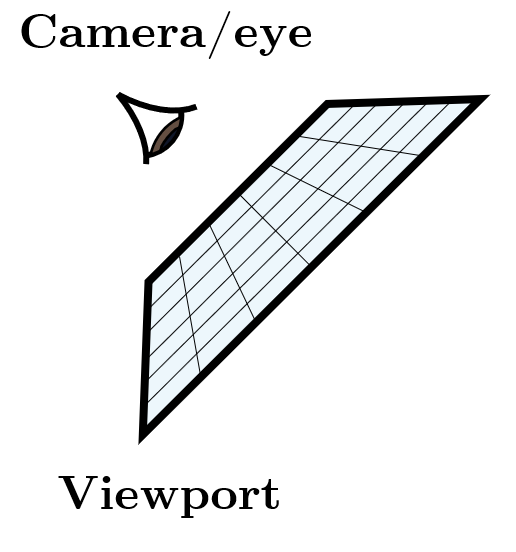
Camera/Sensor/Eye- Ray-object inetrsections: We must be able to tell precisely where a given ray intersects a given geometric object. In addition, we need to determine certain properties of the object at the intersection point, such as a surface normal or its material.
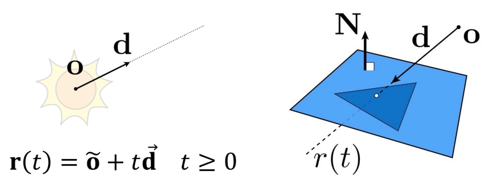
Ray r(t) and Ray-Triangle Intersection-
Light Sources: Without lighting, there would be little point in rendering a scene. A ray tracer must model the distribution of light throughout the scene, including not only the locations of the lights themselves but also the way in which they distribute their energy throughout space.
-
Visibility: In order to know whether a given light deposits energy at a point on a surface, we must know whether there is an uninterrupted path from the point to the light source. Fortunately, this question is easy to answer in a ray tracer, since we can just construct the ray from the surface to the light, find the closest ray–object intersection, and compare the intersection distance to the light distance.
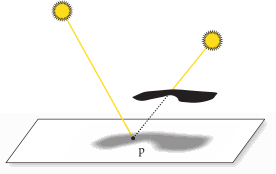
Visibility- Light scattering at surfaces: Each object must provide a description of its appearance, including information about how light interacts with the object’s surface, as well as the nature of the reradiated (or scattered) light. Models for surface scattering are typically parameterized so that they can simulate a variety of appearances.
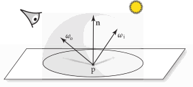
Scattering-
Indirect light transport: Because light can arrive at a surface after bouncing off or passing through other surfaces, it is usually necessary to trace additional rays to capture this effect.
-
Ray propagation: We need to know what happens to the light traveling along a ray as it passes through space. If we are rendering a scene in a vacuum, light energy remains constant along a ray. Although true vacuums are unusual on Earth, they are a reasonable approximation for many environments. More sophisticated models are available for tracing rays through fog, smoke, the Earth’s atmosphere, and so on.
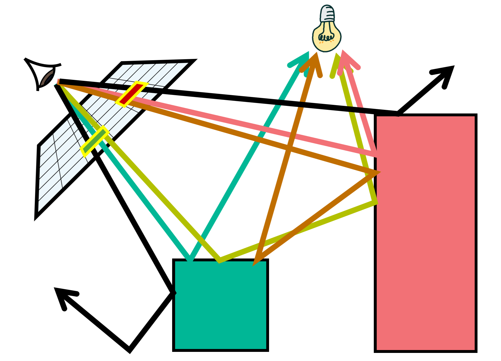
Path Tracing OverviewMonte Carlo Basics
Because Monte Carlo integration is based on randomization, we’ll first dicuss some ideas from probability and statistics.
First we define a random variable.
Definition - Random Variable
A random variable $X$ is a function that maps outcomes from the sample space $\Omega$ to the set of real numbers $\mathbb{R}$:
$$ X : \Omega \rightarrow \mathbb{R} $$Each outcome $\omega \in \Omega$ is assigned a numerical value $X(\omega)$, representing the realization of the random variable.
We also defined a Probability Mass Function. The probabilitues of events $\lbrace X=x_k \rbrace$ are formally shown by the probability mass function (PMF) of $X$.
Definition - Probability Mass Function
Let $X$ be a dscrete Random variable with range $R_X=\lbrace x_1, x_2, \dots \rbrace$ (finite or countably infinite). The function:
$$ p_X(x_k) = P(X=x_k), \text{for k = }1, 2, \dots $$is called the probability mass function (PMF) of $X$
Thus, the PMF is a probability measure that gives us probabilities of the possible values for a random variable.
Properties — Probability Mass Function (PMF)
$$ \boxed{ \begin{aligned} &\text{Let } X \text{ be a discrete random variable with range } \mathcal{R}_X \text{ and PMF } p_X(x) = P(X = x). \\[6pt] &\text{Then the PMF satisfies the following properties:} \\[10pt] &1.\ \textbf{Non-negativity: } 0 \le p_X(x) \le 1, \quad \forall x \in \mathcal{R}_X \\[6pt] &2.\ \textbf{Normalization: } \sum_{x \in \mathcal{R}_X} p_X(x) = 1 \\[6pt] &3.\ \textbf{Additivity over sets: } P(X \in A) = \sum_{x \in A} p_X(x), \quad \forall A \subseteq \mathcal{R}_X \end{aligned} } $$The PMF is one way to describe the distribution of a discrete random variable and cannot gbe defined over continuous variabels. The cumulative distribution function (CDF) of a random variable is another method to describe the distribution of random variables. The advantage of the CDF is that it can be defined for any kind of random variable (discrete, continuous, and mixed).
Definition - Probability Mass Function
The cumulative distribution function (CDF) of random variable $X$ is defined as :
$$F_X(x) = p(X\leq x_k), \text{for all }x\in\mathbb{R}$$is called the probability mass function (PMF) of $X$
Note that the subscript $X$ indicates that this is the CDF of the random variable $X$. Also, note that the CDF is defined for all $x\in \mathbb{R}$
$$ \boxed{ \forall\, a \le b, \quad P(a < X \le b) = F_X(b) - F_X(a) } $$Definition — Probability Density Function (PDF)
Let $X$ be a continuous random variable. The probability density function (PDF) of $X$ is a non-negative function $f_X(x)$ satisfying:
$$ P(a \le X \le b) = \int_a^b f_X(x)\,dx $$for all real numbers $a \le b$.
The PDF must satisfy the following properties:
$$ \boxed{ \begin{aligned} &1.\ \textbf{Non-negativity: } f_X(x) \ge 0, \quad \forall x \in \mathbb{R} \\[4pt] &2.\ \textbf{Normalization: } \int_{-\infty}^{\infty} f_X(x)\,dx = 1 \end{aligned} } $$Unlike a PMF, the PDF itself does not give probabilities directly; instead, the probability that $X$ lies in an interval is given by the area under $f_X(x)$ over that interval.
Definition — Expected Value
Let $X$ be a continuous random variable with probability density function $f_X(x)$.
$$ \boxed{ \mathbb{E}[X] = \int_{-\infty}^{\infty} x\, f_X(x)\, dx } $$
The expected value (or mean) of $X$, denoted by $\mathbb{E}[X]$, is defined as:
The expected value represents the theoretical average value of $X$ - the value one would obtain as the limit of the sample mean if the random process were repeated infinitely many times.
Definition — Variance
Let $X$ be a continuous random variable with probability density function $f_X(x)$ and expected value $\mu = \mathbb{E}[X]$.
$$ \boxed{ \mathrm{Var}(X) = \int_{-\infty}^{\infty} (x - \mu)^2\, f_X(x)\, dx } $$
The variance of $X$, denoted by $\mathrm{Var}(X)$, measures the expected squared deviation of $X$ from its mean:Equivalently, variance can also be expressed as:
$$ \boxed{ \mathrm{Var}(X) = \mathbb{E}[X^2] - (\mathbb{E}[X])^2 } $$
The variance quantifies the spread or dispersion of the distribution - larger values indicate greater variability of $X$ around its mean.
The Monte Carlo Estimator
Let $I$ be an integral of interest (the rendering equation for us), defined over $\Omega$:
$$ I = \int_{\Omega} f(x)\, dx $$where $\Omega$ is any reasonable integration domain.
From Expectation to Integration
The key insight of Monte Carlo integration is recognizing that any integral can be rewritten as an expectation of a random variable.
Given a probability density function (PDF) $p(x)$ defined over $\Omega$, we can decompose the integral as:
$$ I = \int_{\Omega} f(x)\, dx = \int_{\Omega} \frac{f(x)}{p(x)} p(x)\, dx $$By the definition of expected value for a continuous random variable $X$ with PDF $p(x)$:
$$ \mathbb{E}[g(X)] = \int_{\Omega} g(x) \cdot p(x)\, dx $$we can identify:
$$ I = \mathbb{E}\left[\frac{f(X)}{p(X)}\right] $$where $X$ is a random variable drawn from distribution $p(x)$.
Properties of the Probability Density Function $p(x)$
The PDF $p(x)$ must satisfy the following fundamental properties:
$$ \boxed{ \begin{aligned} &1.\ \textbf{Non-negativity:}\quad p(x) \geq 0, \quad \forall x \in \Omega \\[8pt] &2.\ \textbf{Normalization:}\quad \int_{\Omega} p(x)\, dx = 1 \\[8pt] &3.\ \textbf{Support condition:}\quad p(x) > 0 \text{ wherever } f(x) \neq 0 \end{aligned} } $$The third property is crucial: if $p(x) = 0$ at some point where $f(x) \neq 0$, the ratio $\frac{f(x)}{p(x)}$ becomes undefined or infinite, making the estimator invalid.
Definition - Monte Carlo Estimator
To approximate the expected value $\mathbb{E}[f(X)/p(X)]$, we draw $N$ independent samples $X_1, X_2, \ldots, X_N$ from $p(x)$ and compute their average:
$$ \boxed{ \hat{I}_{MC} = \frac{1}{N}\sum_{i=1}^{N} \frac{f(X_i)}{p(X_i)}, \quad X_i \stackrel{\text{i.i.d.}}{\sim} p(x) } $$This is the importance sampling Monte Carlo estimator. The term “importance sampling” refers to the fact that we sample proportionally to how important each region is to the integral (weighted by $p(x)$).
Derivation of Properties
Property 1: Unbiasedness
To prove that $\mathbb{E}[\hat{I}_{MC}] = I$, we take the expectation of both sides:
$$ \mathbb{E}[\hat{I}_{MC}] = \mathbb{E}\left[\frac{1}{N}\sum_{i=1}^{N} \frac{f(X_i)}{p(X_i)}\right] $$By linearity of expectation:
$$ = \frac{1}{N}\sum_{i=1}^{N} \mathbb{E}\left[\frac{f(X_i)}{p(X_i)}\right] $$Since each $X_i \sim p(x)$ independently and identically, each term equals the same expectation:
$$ = \frac{1}{N}\sum_{i=1}^{N} \int_{\Omega} \frac{f(x)}{p(x)} \cdot p(x)\, dx $$$$ = \frac{1}{N}\sum_{i=1}^{N} \int_{\Omega} f(x)\, dx $$$$ = \frac{1}{N} \cdot N \cdot I = I $$Therefore:
$$ \boxed{\mathbb{E}[\hat{I}_{MC}] = I} $$The estimator is unbiased, meaning its expected value equals the true integral.
Property 2: Variance Derivation
The variance of the estimator is:
$$ \text{Var}(\hat{I}_{MC}) = \text{Var}\left(\frac{1}{N}\sum_{i=1}^{N} \frac{f(X_i)}{p(X_i)}\right) $$Using the property that $\text{Var}(cY) = c^2 \text{Var}(Y)$ for constant $c$:
$$ = \frac{1}{N^2} \text{Var}\left(\sum_{i=1}^{N} \frac{f(X_i)}{p(X_i)}\right) $$Since the $X_i$ are independent, variances of independent random variables add:
$$ = \frac{1}{N^2} \sum_{i=1}^{N} \text{Var}\left(\frac{f(X_i)}{p(X_i)}\right) $$Each term has the same variance since all $X_i$ are identically distributed:
$$ = \frac{1}{N^2} \cdot N \cdot \text{Var}\left[\frac{f(X_1)}{p(X_1)}\right] $$$$ \boxed{\text{Var}(\hat{I}_{MC}) = \frac{1}{N}\text{Var}\left[\frac{f(X)}{p(X)}\right]} $$Key observation: The variance decreases as $\frac{1}{N}$, so to reduce variance by a factor of 4, we need 16 times more samples.
Property 3: Convergence Rate and Standard Error
The standard deviation (standard error) of the estimator is:
$$ \sigma(\hat{I}_{MC}) = \sqrt{\text{Var}(\hat{I}_{MC})} = \frac{1}{\sqrt{N}}\sqrt{\text{Var}\left[\frac{f(X)}{p(X)}\right]} $$$$ \boxed{\sigma(\hat{I}_{MC}) = \mathcal{O}\left(\frac{1}{\sqrt{N}}\right)} $$This means the error decreases proportionally to $N^{-1/2}$, independent of the dimensionality of the problem. This is a major advantage over deterministic numerical integration methods, which suffer from the “curse of dimensionality.”
Summary: Properties of the Monte Carlo Estimator
$$ \boxed{ \begin{aligned} &\text{1. Unbiasedness:}\quad \mathbb{E}[\hat{I}_{MC}] = I \\[8pt] &\text{2. Variance:}\quad \text{Var}(\hat{I}_{MC}) = \frac{1}{N}\text{Var}\left[\frac{f(X)}{p(X)}\right] \\[8pt] &\text{3. Convergence:}\quad \text{Error} = \mathcal{O}(N^{-1/2}) \\[8pt] &\text{4. Standard Error:}\quad \sigma(\hat{I}_{MC}) \propto \frac{1}{\sqrt{N}} \end{aligned} } $$These properties make Monte Carlo integration particularly attractive for high-dimensional problems like rendering, where evaluating the rendering equation requires integrating over many dimensions (directions, wavelengths, time, etc.).
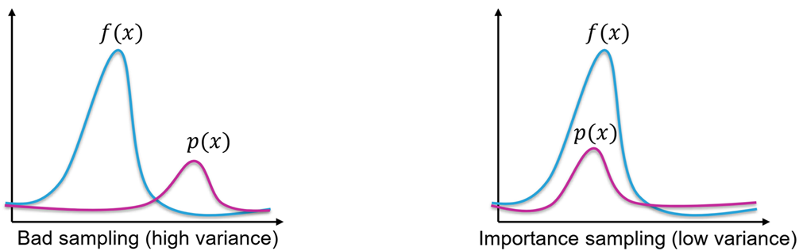
Importance Sampling PDFOptimal Importance Sampling?
A natural question arises: what choice of $p(x)$ minimizes the variance? This is crucial because:
$$ \text{Var}(\hat{I}_{MC}) = \frac{1}{N}\text{Var}\left[\frac{f(X)}{p(X)}\right] $$The variance depends directly on how we choose $p(x)$. Can we choose $p(x)$ to make it smaller?
Variance of the Weighted Function
Let’s expand the variance term:
$$ \text{Var}\left[\frac{f(X)}{p(X)}\right] = \mathbb{E}\left[\left(\frac{f(X)}{p(X)}\right)^2\right] - \left(\mathbb{E}\left[\frac{f(X)}{p(X)}\right]\right)^2 $$The second term is fixed (it equals $I^2$, the integral we’re trying to compute). So to minimize variance, we need to minimize:
$$ \mathbb{E}\left[\left(\frac{f(X)}{p(X)}\right)^2\right] = \int_{\Omega} \frac{f(x)^2}{p(x)^2} \cdot p(x)\, dx = \int_{\Omega} \frac{f(x)^2}{p(x)}\, dx $$The Optimal Choice: p(x) ∝ f(x)
Claim: The variance is minimized when $p(x)$ is proportional to $f(x)$.
Let’s assume:
$$ p^*(x) = \frac{|f(x)|}{\int_{\Omega} |f(x)|\, dx} = \frac{|f(x)|}{I} $$where $I = \int_{\Omega} |f(x)|, dx$ (assuming $f(x) \geq 0$ for simplicity).
What happens to the weighted ratio?
$$ \frac{f(X)}{p^*(X)} = \frac{f(X)}{f(X)/I} = I \quad \text{(constant!)} $$Since $\frac{f(X)}{p^*(X)}$ is a constant:
$$ \text{Var}\left[\frac{f(X)}{p^*(X)}\right] = \text{Var}[I] = 0 $$This is the best possible case: zero variance!
Why This Makes Intuitive Sense
When $p(x) \propto f(x)$:
- Regions where $f(x)$ is large: We sample frequently, so each sample contributes significant information
- Regions where $f(x)$ is small: We sample rarely, which is fine because they don’t contribute much anyway
- Result: Every sample carries roughly equal “importance” to the integral
By contrast, with uniform sampling $p(x) = \text{constant}$:
- We waste samples in regions where $f(x) \approx 0$ (unimportant)
- We don’t sample enough where $f(x)$ is large (important)
- The ratio $\frac{f(X)}{p(X)}$ varies wildly, causing high variance
Practical Reality: The Catch
While optimal importance sampling with $p(x) \propto f(x)$ is theoretically perfect, it’s impractical:
$$ p^*(x) = \frac{f(x)}{\int_{\Omega} f(x)\, dx} $$To construct this PDF, we already need to compute the integral we’re trying to find! This is circular.
In practice, we approximate: Choose $p(x)$ to be proportional to $f(x)$ as best we can:
- In path tracing: $p(x)$ might be proportional to the BRDF and lighting
- In neural importance sampling: Use neural networks to learn $p(x) \approx f(x)$
The better our approximation $p(x) \approx c \cdot f(x)$, the lower the variance.
The Importance Sampling Principle
$$ \boxed{ \begin{aligned} &\text{Best choice:}\quad p(x) \propto f(x) \Rightarrow \text{Var} = 0 \text{ (ideal)}\\[8pt] &\text{General principle:}\quad \text{Var} \propto \int_{\Omega} \frac{f(x)^2}{p(x)}\, dx\\[8pt] &\text{Practical strategy:}\quad \text{Choose } p(x) \text{ to approximate } f(x) \\[8pt] &\qquad\qquad\text{Better approximation} \Rightarrow \text{Lower variance} \Rightarrow \text{Fewer samples needed} \end{aligned} } $$This is why importance sampling is so powerful: by choosing $p(x)$ wisely, we can dramatically reduce the number of samples needed to achieve a target accuracy.
Product Function Integral
We are frequently face with integrals that are product of tow or more functions: $\int f_a(x)f_b(x)dx$. It is often possible to derive separate sampling strategies for individual factors individually, though not one that is similar to their product. THis situation if especially comon in the integrals involved with light transport, such as in the product BSDF, incident radiance and a cosine factor in the light transport equation.
To understand the challenges involved with applying Monte Carlo to such products, assume for now the good fortune of having two sampling distributions $p_a$ and $p_b that match the distributions of $f_a$ and $f_b$ exactly (In practice, this will not normally be the case). With Monte Carlo estimator, we have two options:
Sample using $p_a$, which gives estimator:
$$ \frac{f(X)}{p_a(x)} = cf_b(X) $$where $c$ is a constant equal to the integral of $f_a$, since $p_a(x) \propto f_a(x)$. The variance of this estimator is proportional to the varianc eof $f_b$, which may itself be high. Conversely, we might sample form $p_b$, though doing so gives us an estimator with variance proportional to the variance of $f_a$, which may similarly be high. . In the more common case where the sampling distributions only approximately match one of the factors, the situation is usually even worse.
Unfortunately, the obvious solution of taking some samples from each distribution and averaging the two estimators is not much better. Because variance is additive, once variance has crept into an estimator, we cannot eliminate it by adding it to another low-variance estimator.
Multiple Importance Sampling (MIS)
Multiple importance sampling (MIS) addresses exactly this issue, with an easy-to-implement variance reduction technique
The basic idea is that, when estimating an integral, we should draw samples from multiple sampling distributions, chosen in the hope that at least one of them will match the shape of the integrand reasonably well, even if we do not know which one this will be. MIS then provides a method to weight the samples from each technique that can eliminate large variance spikes due to mismatches between the integrand’s value and the sampling density.
Definition — Multiple Importance Sampling
With two sampling distributions $p_a$ and $p_b$ and a single sample taken from each one, $X\sim p_a$ and $Y\sim p_b$, the MIS Monte Carlo Estimator is defined as:
$$ w_a(X)\frac{f(X)}{p_a(X)} + w_b(Y)\frac{f(Y)}{p_b(Y)} >$$where $w_a$ and $w_b$ are weightin functions chosen such that the expected value of this estimator is the value of integral of $f(x)$
More generally, given $n$ sampling distributions $p_i$ with $n_i$ samples $X_{i,j}$ taken from the $i$-th distribution, the MIS Monte Carlo estimator is:
$$ F_n = \sum_{i=1}^{n}\frac{1}{n_i}\sum_{j=1}^{n_i}w_i(X_{i, j}) \frac{f(X_{i, j})}{p_i(X_{i, j})} >$$
The full set of conditions on the weighting functions for the estimator to be unbiased are that they sum to 1 when $f(x)\neq 0$, $\sum_{i=1}^{n}w_i(x)=1$ and that $w_i(x)=0$ if $p_i(x)=0$.
In practice, a good choice for the weighting functions is given by the balance heuristic, which attempts to fulfill this goal by taking into account all the different ways that a sample could have been generated, rather than just the particular one that was used to do so. The balance heuristic’s weighting function for the th sampling technique is :
$$ w_i(x) = \frac{n_ip_i(x)}{\sum_j n_j p_j(x)} $$The power heuristic often reduces variance even further. For an exponent $\beta$, the power heuristic is
$$ w_i(x) = \frac{(n_ip_i(x))^\beta}{\sum_j (n_j p_j(x))^\beta} $$Russian Roulette
Russian roulette is a technique that can improve the efficiency of Monte Carlo estimates by skipping the evaluation of samples that would make a small contribution to the final result.
Select a termination probability $q$. With probability $q$, skip evaluation and contribute $c = 0$. With probability $1-q$, evaluate and weight by $\frac{1}{1-q}$:
$$ \boxed{ \hat{I}_{RR} = \begin{cases} 0 & \text{with probability } q \\ \frac{\hat{I}_{MC}}{1-q} & \text{with probability } 1-q \end{cases} } $$Unbiasedness
$$ \mathbb{E}[\hat{I}_{RR}] = q \cdot 0 + (1-q) \cdot \frac{1}{1-q} \mathbb{E}[\hat{I}_{MC}] = \mathbb{E}[\hat{I}_{MC}] = I $$The estimator remains unbiased despite skipping samples.
With these Monte Carlo foundations in place, let’s examine how path tracing implements these concepts in practice.
Path Tracing
Path Tracing is a rendering algorithm in computer graphics that simulates how light interacts with objects and participting media to generate realistic (physically plausible) images.This is conceptually a simple algorithm; it is based on following th path of a ray of light through a scene as it interacts with and bounces off obejcts in an environment.
It is an unbiased estimate of the rendering equation:
$$ L_o(x, \omega_o) = L_e(x, \omega_o) + \int_{\Omega} \boxed{f_r(x, \omega_i, \omega_o)\;}L_i(x, \omega_i)\; (\omega_i \cdot n)\; d\omega_i $$BxDF Functions
The concept behind all BxDF functions could be described as a black box with the inputs being any two angles, one for incoming (incident) ray and the second one for the outgoing (reflected or transmitted) ray at a given point of the surface. The output of this black box is the value defining the ratio between the incoming and the outgoing light energy for the given couple of angles
-
(BSDF) Bidirectional Scattering Distribution Function accounts for the light transport properties of the hit material. BSDF is a superset and the generalization of the BRDF and BTDF
-
BRDF (Bidirectional Reflectance Distribution Function) considers only the reflection of incoming light onto a surface
-
BTDF (Bidirectional transmittance distribution function) is similar to BRDF but for the opposite side of the surface when it is transmitted through the surface
(Some tend to use the term BSDF simply as a category name covering the whole family of BxDF functions.)
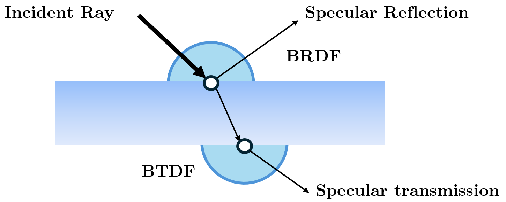
BTDF + BRDF Visualization (unifrom for both here)We usually distinguish three basic material types:
- Perfectly diffuse (light is scattered equally in/from all directions)
- Perfectly specular (light is reflected in/from exactly one direction)
- Glossy (mixture of the other two, specular highlights)
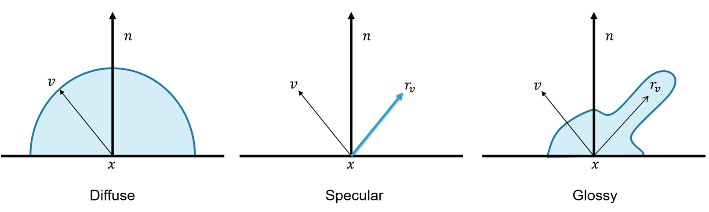
Simple BSDF Visualization for Diffuse, Specular and Glossy Material
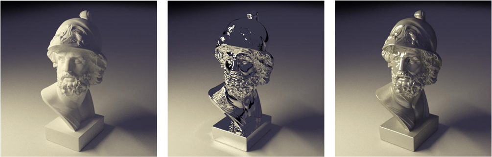
Objects with BSDF for Diffuse, Specular and Glossy MaterialNow that we know about the BxDF functions which define the material properties, we cna look at how the Path Tracing is done.
Path Tracing Algorithm Steps
TODO
- Generate camera ray through pixel using sensor
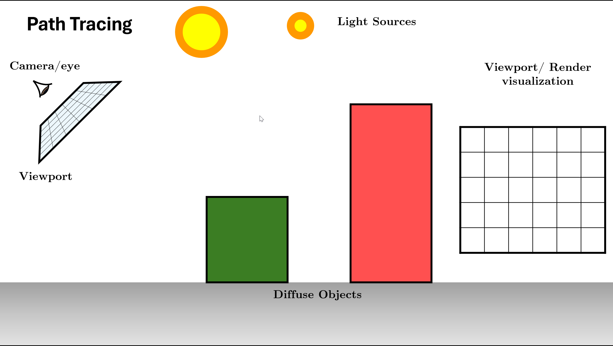
Initialize Scene and Generate Rays using Sensor- Trace ray into scene, find first intersection
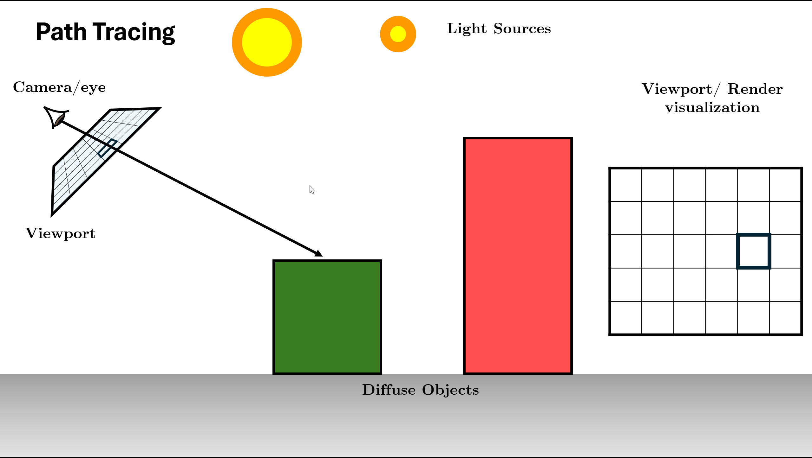
Trace Ray and Find Intersection- Accumulate emission from light sources (NEE optional)
- Sample BSDF to choose next direction
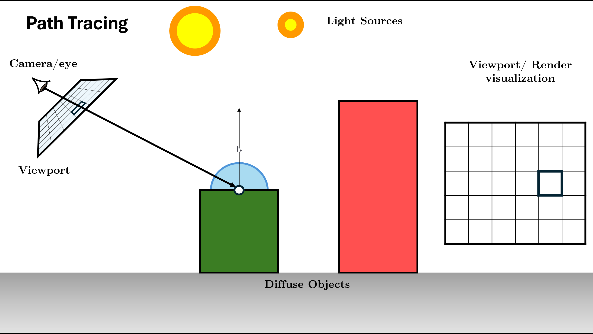
Query BSDF of intersected primitive- Spawn new ray from intersection point
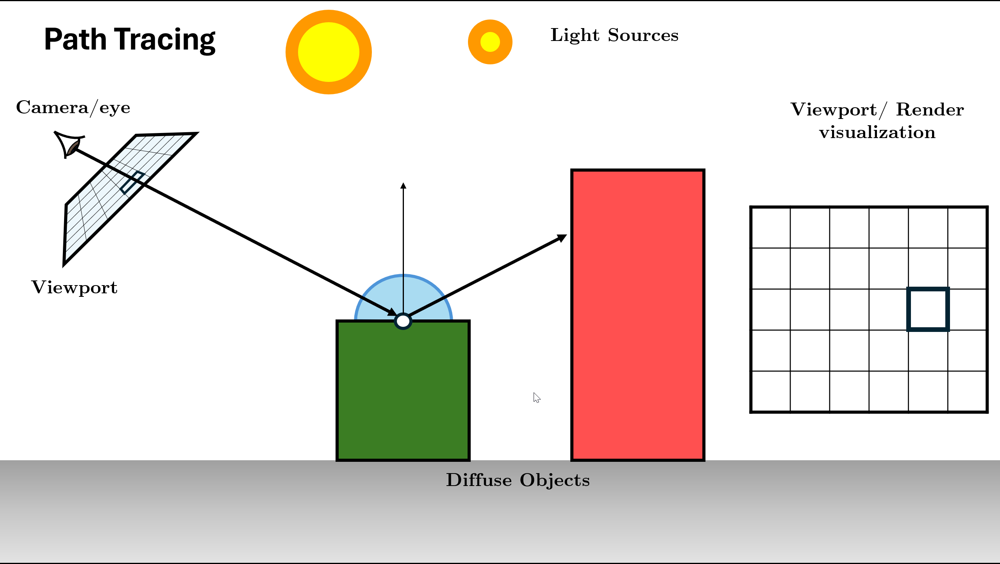
Sample Next Ray using some PDF- Repeat (steps 2-5) until max depth or Russian roulette termination
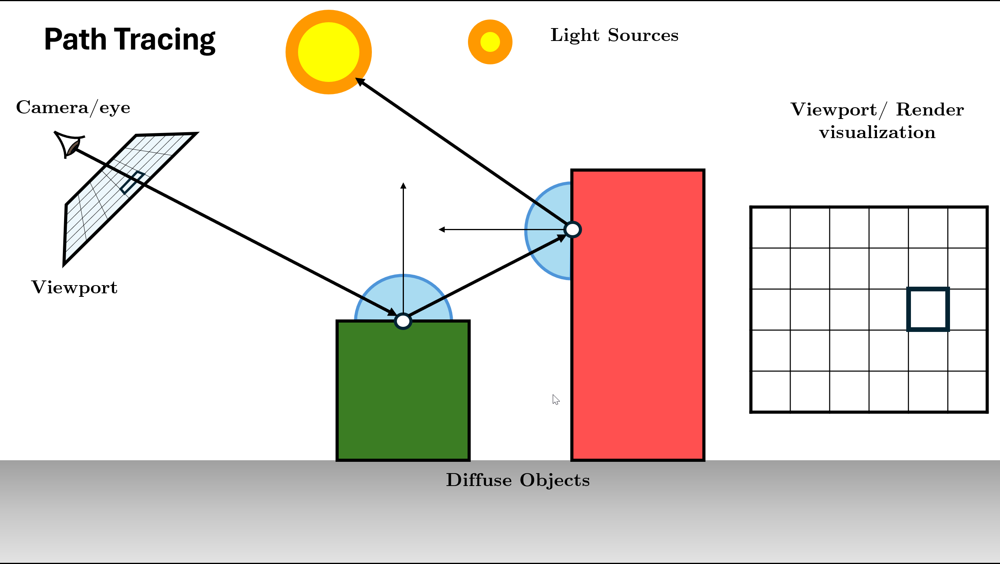
Sample Next Ray using some PDF- Return accumulated radiance
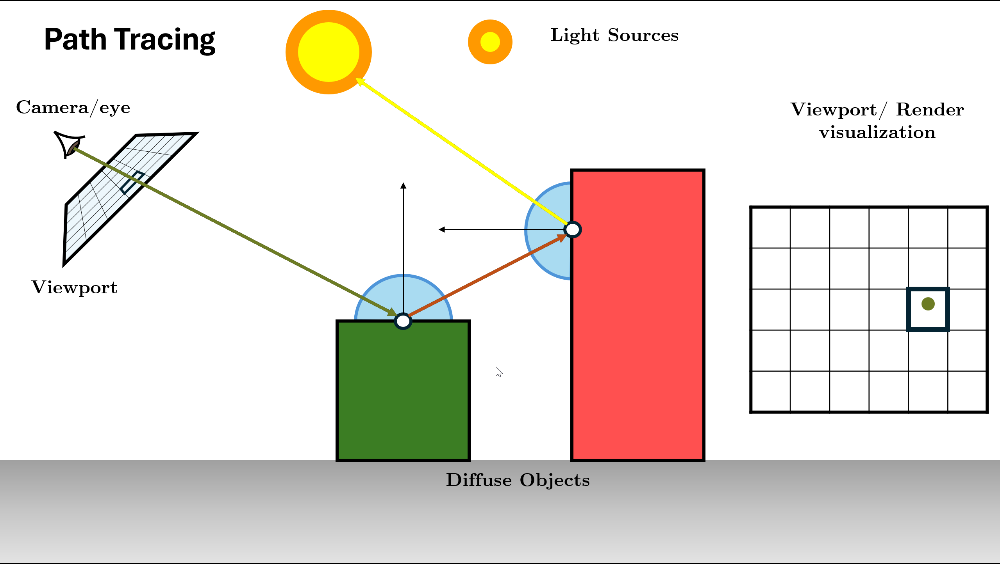
Sample Next Ray using some PDFRepeat the above process for all pixels (Parallely as this is embarrasingly parallel) for some amount of samples per pixel (for anti aliasing as well)
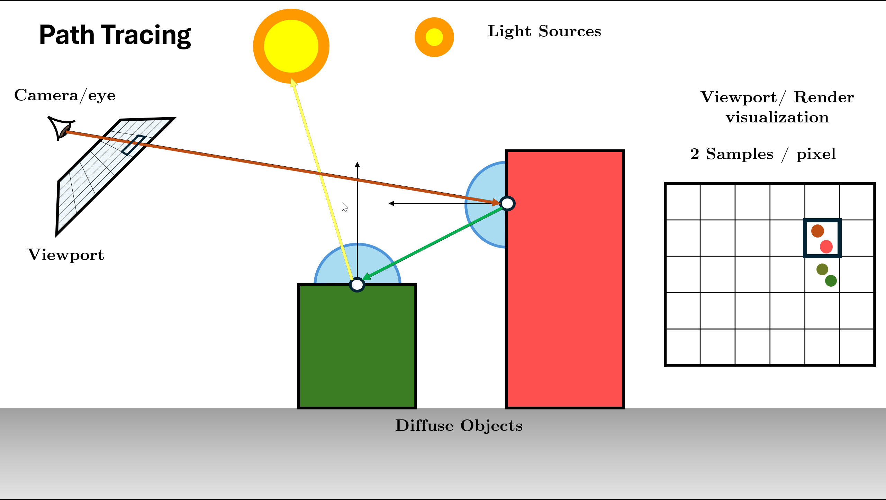
Sample Next Ray using some PDFPath Tracing Integrator in Mitsuba
I am going to use the Mitsuba components to show how a standard Path Tracer works.
First we need to set up all the objects as given in the Assumptions.
First the Sensor/Camera generates the initial rays that we are going to trace.
class PinholeSensor(mi.Sensor):
def __init__(self, props):
super().__init__(props)
self.m_fov = props.get('fov', 45.0)
self.m_film = props.get('film')
self.m_sampler = props.get('sampler')
self.m_to_world = props.get('to_world', mi.ScalarTransform4f())
def sample_ray(self, time, sample1, sample2, active=True):
# Convert sample to pixel, then to ray direction
film_size = self.film().size()
aspect = film_size[0] / film_size[1]
# Normalized device coordinates
ndc = (sample1 * 2.0 - 1.0) * mi.ScalarVector2f(aspect, 1.0)
# Camera space direction
tan_fov = dr.tan(dr.deg2rad(self.m_fov) * 0.5)
direction = mi.ScalarVector3f(ndc.x * tan_fov, ndc.y * tan_fov, -1.0)
# Transform to world space
ray = self.m_to_world @ mi.Ray3f(o=[0,0,0], d=dr.normalize(direction))
return ray, mi.Color3f(1.0)
def film(self): return self.m_film
def sampler(self): return self.m_sampler
mi.register_sensor("pinhole", lambda props: PinholeSensor(props))
Then those Rays are Given to the Integrator which then traces the rays through the scene:
class Simple(mi.SamplingIntegrator):
def __init__(self, props=mi.Properties()):
super().__init__(props)
self.max_depth = props.get("max_depth") # Max Depth for Tracing
self.rr_depth = props.get("rr_depth") # Depth After which Russina Roulette Starts
def sample(self, scene: mi.Scene, sampler: mi.Sampler, ray_: mi.RayDifferential3f, medium: mi.Medium = None, active: bool = True):
bsdf_ctx = mi.BSDFContext() # get the bsdf context
ray = mi.Ray3f(ray_) # Copy the Rays given by the Sensor
depth = mi.UInt32(0) # Initialize depth to 0
f = mi.Spectrum(1.) # initialize throughput to 1
L = mi.Spectrum(0.) # Initialize Radiance to 1
prev_si = dr.zeros(mi.SurfaceInteraction3f)
loop = mi.Loop(name="Path Tracing", state=lambda: (
sampler, ray, depth, f, L, active, prev_si))
loop.set_max_iterations(self.max_depth)
while loop(active):
# Intersect Ray with the Primitive in the Scene
si: mi.SurfaceInteraction3f = scene.ray_intersect(
ray, ray_flags=mi.RayFlags.All, coherent=dr.eq(depth, 0))
# Get the BSDF of the intersected Primitive
bsdf: mi.BSDF = si.bsdf(ray)
# Direct emission
ds = mi.DirectionSample3f(scene, si=si, ref=prev_si)
Le = f * ds.emitter.eval(si) # Check if the primitive Emits light
active_next = (depth + 1 < self.max_depth) & si.is_valid()
# BSDF Sampling
bsdf_smaple, bsdf_val = bsdf.sample(
bsdf_ctx, si, sampler.next_1d(), sampler.next_2d(), active_next)
# Update loop variables
ray = si.spawn_ray(si.to_world(bsdf_smaple.wo))
L = (L + Le)
f *= bsdf_val
prev_si = dr.detach(si, True)
# Stopping criterion (russian roulettte)
active_next &= dr.neq(dr.max(f), 0)
rr_prop = dr.maximum(f.x, dr.maximum(f.y, f.z))
rr_prop[depth < self.rr_depth] = 1.
f *= dr.rcp(rr_prop)
active_next &= (sampler.next_1d() < rr_prop)
active = active_next
depth += 1
return (L, dr.neq(depth, 0), [])
mi.register_integrator("integrator", lambda props: Simple(props))
A look at the Neural Importance Sampling Techniques
The techniques we’ve covered (importance sampling, MIS, Russian roulette) all rely on choosing good sampling distributions. Neural methods learn these distributions from data, enabling near-optimal importance sampling in complex scenes. The papers below represent the evolution of this idea of choosing/designing $p(x)$ carefully.
| Paper | Venue |
|---|---|
| Path Guiding Using Spatio-Directional Mixture Models | EGSR (2014) |
| Practical Path Guiding for Efficient Light-Transport Simulation | EGSR (2017) |
| Offline Deep Importance Sampling | Pacific Graphics (2018) |
| Neural Importance Sampling | SIGGRAPH (2019) |
| Real-time Neural Radiance Caching for Path Tracing | SIGGRAPH (2021) |
| Neural Parametric Mixtures for Path Guiding | SIGGRAPH (2023) |
| Neural Product Importance Sampling via Warp Composition | SIGGRAPH Asia (2024) |
| Neural Path Guiding with Distribution Factorization | EGSR (2025) |